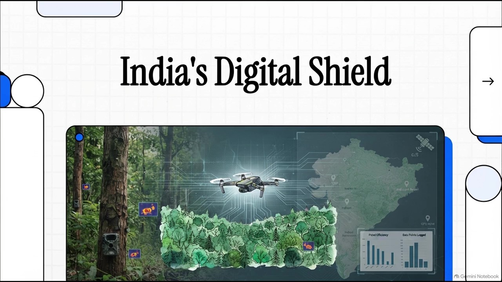

Technology for a
Wilder India
How modern technology is helping protect India's forests and wildlife.
Protecting Nature in the Digital Age
From satellites in space to sensors on the forest floor, technology helps conservation teams understand habitats and make informed decisions. Field knowledge and human expertise remain at the heart of it.
Six Technologies. One Purpose.
See changes in forest cover, vegetation and landscapes from above.
Learn MoreSurvey specific habitats and places that are difficult to reach on foot.
Learn MoreObserve animals and gather information from the forest floor.
Learn MoreUnderstand animal movements, habitats and wildlife corridors.
Learn MoreSupport field patrols with digitally recorded observations.
Learn MoreHelp researchers sort images and find patterns in large datasets.
Learn More
Watch Our Documentary
Our documentary brings the story together: the tools, the people, and the possibilities for conservation in India.
It provides information about the various tools that are used in modern era to protect wildlife and forests.